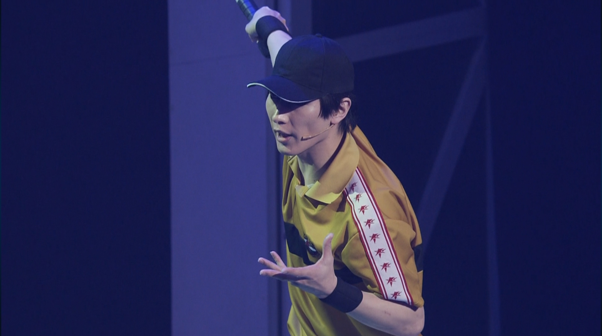
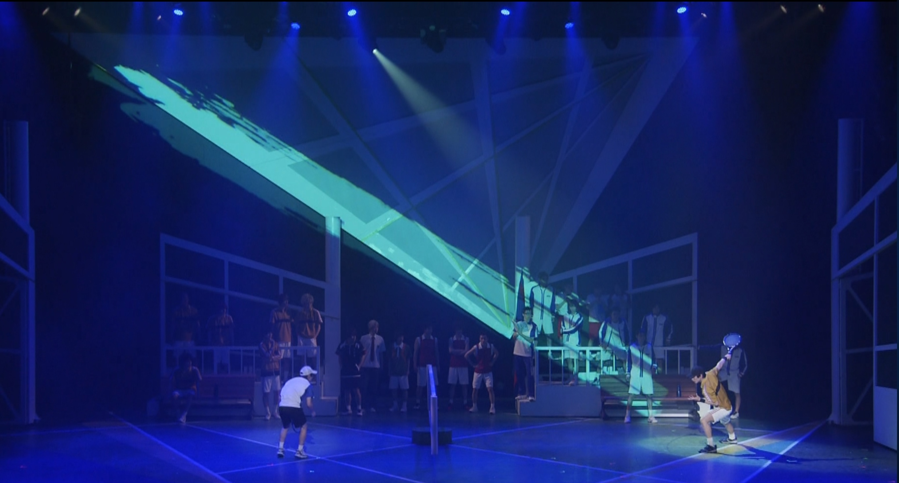
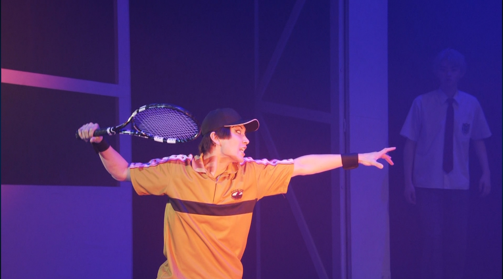
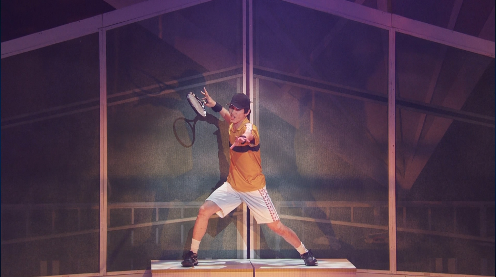

風林火山｜Observation Notes
弦一郎の奥義「風林火山」は、四つの異なる戦術を切り替えて戦う独自の総合戦闘スタイルである。
・「風」：居合道の動きを応用した超高速スイングで放たれる一撃。ただし、一振りごとに型を収めるため、連打には適さない。
・「林」：あらゆる回転や変化球を柔らかく受け流す守りの型。相手の技巧に動じることなくその力をいなす。
・「火」：相手のラケットを弾き飛ばすほどの爆発的な威力をもった重打を連発する攻撃スタイル。その威力もさることながら迫力で相手を威圧する。
・「山」：いかなる攻撃にも微動だにせず構える、堅牢な防御の型。
技の評価
四つの型を的確に使い分けることで試合の主導権を掌握し、圧倒的な重圧を相手に与える。
ただ風林火山を弦一郎に出させるに至るほどの選手は少なく、このデータもまだ未知数である。
- 応用力 ：◎
- 精神力 ：◎
- 持続力 ：◯
- 再現性 ：◎
▶ 観察記録ファイル（全6枚）




×